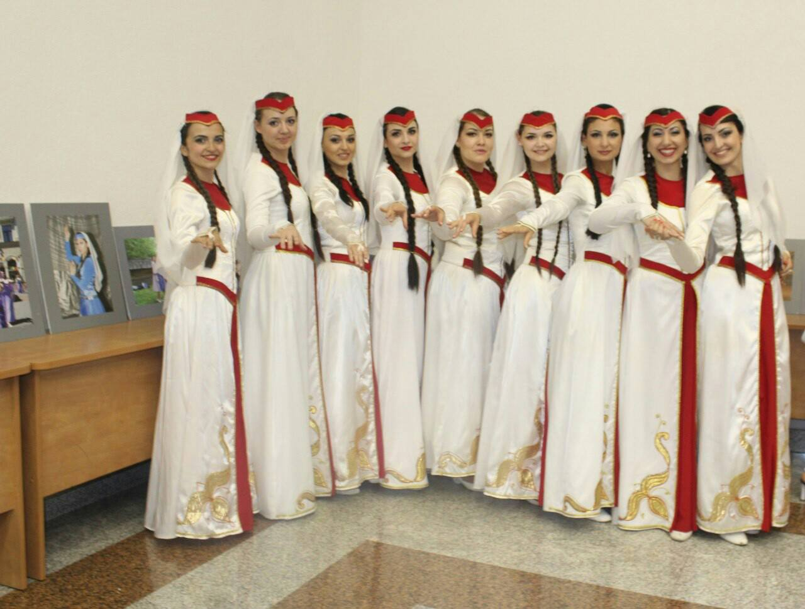
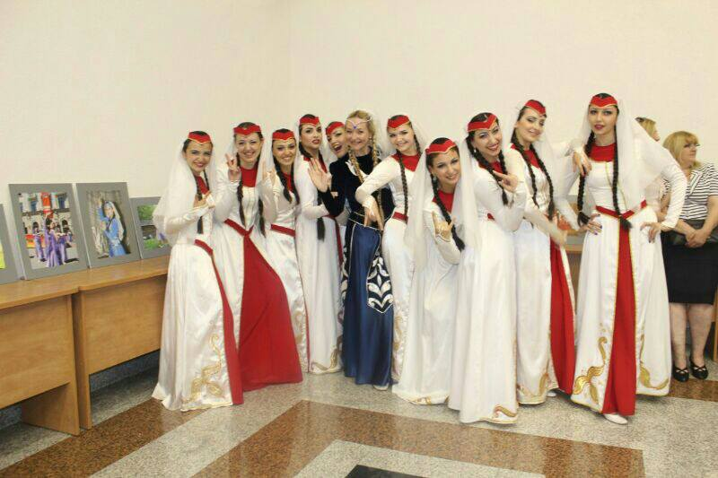

My first hobby is dancing
Information about dances

ARMENIAN DANCE BEFORE 1915

DANCE TYPES
The traditions of many centuries contributed to the development of
the rich diversity in Armenian dance. The dance itself is divided
into two categories: dances (barer), which were executed to the
accompaniment of musical instruments, and song-dances (bari-yerker),
which were performed to vocal accompaniment.
Dances were usually accompanied by musical instruments. In the
village, the most common instruments were davul / tahul (a large drum),
and zourna (primitive oboe). Other popular village instruments used
were dudek sheeve and mey (shepherd's flutes), and daf (tambourine).
The sax was a stringed instrument commonly played in Western Armenia,
with the tar being its Eastern Armenian counterpart. The kemenche
(fiddle) was used as a folk instrument on the Black Sea, but
elsewhere was used to accompany the songs and poetry of the wandering ashoog
(troubadour). A village ensemble often consisted of no more than
two or three instruments.In the cities, a more elaborate tradition of musical performance
existed, with groups of musicians playing in orchestras. These musicians often
played tar, oud, kanoon, snatur, nagar, kemenche, daf, dumbeg, and
mandolin, or (starting in the 19th century) clarinet, piano, violin,
and other European instruments. The music of urban ensembles was
heavily influenced by urban "oriental" (Arabic, Persian, and Turkish)
music.
You can watch all our dances on YouTube
First Name, Last Name, e-mail, phone number.
As soon as possible we'll callback to You!